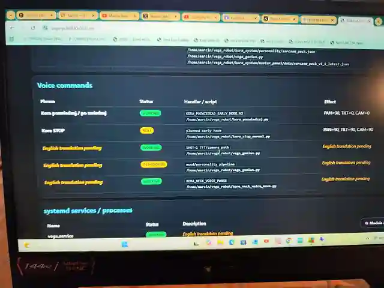
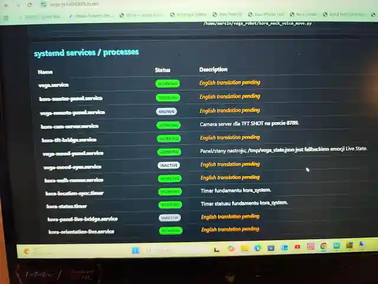

Wake-word + XVF3800
reSpeaker XVF3800 dostarcza dedykowany kanał ASR. Vosk czeka na słowo „Kora”, a potem otwiera okno na właściwą komendę.
Działa · strojenie wake trwa
Kora łączy lokalne modele językowe, rozpoznawanie mowy PL/EN, pamięć, nastrój, kamery, Hailo, LiDAR, sensory, własny routing komend i warstwę charakteru. Ta strona pokazuje, co już zbudowałem — od słowa „Kora” aż po reakcję robota.
Każda warstwa robi małą rzecz. Razem tworzą zachowanie Kory.
Nie mam dyplomu inżyniera ani ukończonych studiów technicznych. Elektroniki, CNC, programowania i robotyki uczyłem się przez robienie: projekt, błąd, spalona płytka, poprawka, kolejna wersja. Nie próbuję udawać laboratorium NASA — pokazuję prawdziwy projekt i to, czego nauczyłem się po drodze.
Nie lista bibliotek, tylko funkcje, które realnie składają się na zachowanie robota.
reSpeaker XVF3800 dostarcza dedykowany kanał ASR. Vosk czeka na słowo „Kora”, a potem otwiera okno na właściwą komendę.
Komendy są dekodowane po polsku i angielsku. Język odpowiedzi jest synchronizowany ze stanem Kory, a proste intencje mogą ominąć cięższy model.
Rozmowa i analiza obrazu mogą działać na lokalnych modelach przez Ollama, z kontekstem dostarczanym przez routing, pamięć i sensory.
Humor, pobudzenie, ciekawość i sarkazm mogą zmieniać charakter odpowiedzi oraz ton głosu. Nastrój nie powinien decydować, czy intencja została rozpoznana.
System zapisuje zdarzenia i wykorzystuje wcześniejszy kontekst. Istnieje też eksperymentalna warstwa „snów”, pracująca na zapisanych doświadczeniach.
Nowa warstwa porównuje całe zdanie i słowa niosące znaczenie. Jedno przekręcone słowo nie powinno zniszczyć sensu, ale inne pytanie nie może zostać zgadnięte na siłę.
Żart o Aleksie otwiera prawdziwą historię techniczną: dwa języki, korekta błędów rozpoznawania, szybkie intencje lokalne, odpowiedzi z charakterem i komendy prowadzące do fizycznych urządzeń.
reSpeaker XVF3800 dostarcza dedykowany kanał mowy. Vosk wykrywa słowo wybudzające i zapisuje komendę, ścieżki PL/EN tworzą kandydatów, a router wybiera intencję. Dopiero potem system decyduje, czy odpowiedzieć natychmiast, użyć warstwy charakteru albo przekazać polecenie do sprzętu.
Szybka intencja lokalna. Nie ma sensu budzić większego modelu tylko po to, żeby spojrzeć na zegar.
Rozpoznana intencja trafia do odpowiedzi, na którą wpływają język, nastrój i sarkazm Kory.
Dłuższa wypowiedź może użyć lokalnego modelu, kontekstu i głosu Piper w aktualnie wybranym języku.
Po rozpoznaniu intencji odpowiedź nie musi kończyć się na mowie — polecenie może zostać przekazane przez BLE do sterownika lampy.
Przypadki, odmiana czasowników, rodzaje, liczebniki i swobodniejszy szyk zdania tworzą wiele poprawnych form tego samego zamiaru. Korekta nie może więc tylko podmienić słowa na najbliższe z listy. Musi porównać całe zdanie, zachować słowa niosące znaczenie i odrzucić podobnie brzmiące, ale inne polecenie. Po angielsku błąd bywa literówką. Po polsku potrafi być nowym przypadkiem gramatycznym i małym miejscem zbrodni.
Kamery i sensory dają systemowi dane o prawdziwym otoczeniu.
Kamera dzienna i szerokokątna NoIR. NoIR może pracować z podświetleniem IR, a warstwa wizyjna wykonuje zdjęcia i przekazuje scenę do analizy.
Hailo obsługuje część percepcji niezależnie od dużego modelu językowego.
LiDAR dostarcza chmurę punktów, a VL53L1X szybką odległość z przodu. Dane pomagają ocenić przeszkody i otoczenie.
Explore łączy pozycję szyi, VL53L1X, LiDAR, kamery i komentarz głosowy w jednej sekwencji.
To moje robocze panele z żywego systemu: nastrój, LiDAR, widzenie, routing komend, procesy i jeden Master Panel, żebym rano pamiętał, co wczoraj zepsułem.

Suwaki to tylko wejście. Po prawej jest stan, który faktycznie żyje: nastrój, pobudzenie, więź ze mną, samotność i światło. Innymi słowy: robot też ma gorszy poniedziałek, tylko zapisuje go do JSON-a.

Chmura punktów, sektory, najbliższa przeszkoda i sugestia kierunku. 23 cm po prawej oznacza dokładnie to, co myślisz: nie jedź tam.

Zdjęcie z LIVE wpada do analizy obrazu, a Kora dopisuje, co widzi. Czasem dobrze. Czasem „widzi window”. Nadal wolę to niż udawanie, że model zawsze ma rację.

Status, porty, ostatni dobry stan i następny krok. Przy tylu skryptach największym luksusem nie jest AI. Jest wiedzieć, co właściwie teraz działa.

Moduły, pliki, statusy i zasada: jedna rzecz na raz, backup, test i rollback. Brzmi nudno. W praktyce oszczędza trzy godziny szukania własnego błędu.

Tu widać, co Kora rozumie głosem, jaki skrypt to obsługuje i jaki ma być efekt. Żadnej magii. Jak nie działa, ma być wiadomo gdzie grzebać.

Usługi systemd dla głosu, kamery, nastroju, chodzenia, synchronizacji i reszty. Zielone WORKING jest przyjemne. INACTIVE też bywa przyjemne, jeśli to było celowe.
Celowo uproszczone przykłady pokazujące ideę. Produkcja ma więcej zabezpieczeń, logowania i testów.
from vosk import KaldiRecognizer
WAKE_WORDS = ["kora"]
wake = KaldiRecognizer(model_pl, 16000)
wake.SetGrammar(json.dumps(WAKE_WORDS))
wake.SetWords(False)
if wake.AcceptWaveform(audio):
text = json.loads(wake.Result())["text"]
if text == "kora":
open_command_window()pl_text, pl_conf = decode_pl(audio)
en_text, en_conf = decode_en(audio)
command = en_text if current_language == "en" else pl_text
handle_command(command)from difflib import SequenceMatcher
def similarity(spoken, target):
return SequenceMatcher(None, spoken.lower(), target.lower()).ratio()
spoken = "what du u think abaut new battery"
target = "what do you think about the new battery"
if similarity(spoken, target) > 0.70:
intent = "new_battery"state = {"humor": 92, "curiosity": 96, "sarcasm": 100}
if state["sarcasm"] > 80:
reply = sarcastic_reply(intent)
else:
reply = normal_reply(intent)neck.move(pan=90, tilt=0)
distance = vl53.read_cm()
points = lidar.scan(seconds=4)
photos = cameras.capture()
scene = analyse(distance=distance, lidar=points, photos=photos)
voice.say(comment(scene))event = {"type": "observation", "source": "camera", "text": "Marcin is working at the bench"}
memory.save(event)
recent = memory.recent(limit=5)
answer = model.ask(question, context=recent)Krótka, techniczna, ironiczna albo spokojna — odpowiedź ma pasować do sytuacji.
what du u think abaut new batteryGodzina, data, prosta komenda czy znana reakcja powinny dostać szybki lokalny handler. Większy model zostaje dla pytań, które go naprawdę potrzebują.
Piper generuje głos, a kolejna warstwa może dostosować tempo i ton do rodzaju wypowiedzi oraz aktualnego stanu Kory.
Kora nie powstała w jeden weekend. System dojrzewał razem z kolejnymi wersjami robota.
Pierwsze konstrukcje, drewno, proste sterowanie i eksperymenty z ruchem.
Plastik, metal, serwa, stabilizacja, sensory, kamery i coraz większa część logiki przenoszona do Raspberry Pi.
Pi 5, Hailo, dwie kamery, LiDAR, PL/EN, lokalne modele, pamięć, Mood Panel, Explore i warstwa osobowości.
Aluminiowa konstrukcja i nowe zasilanie są w realnych testach.
STOP, release i PWM-off mają własną lekką ścieżkę lokalną — bez czekania na model językowy, nastrój ani warstwę osobowości.
WORKING = sprawdzone w realnym systemie. IN TESTING = kod czeka na pełny test głosowy/regresyjny. IN PROGRESS = funkcja działa częściowo i nadal jest rozwijana.